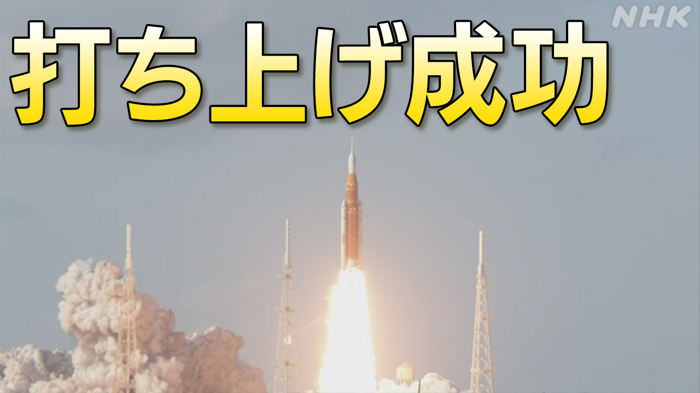

最新ニュース
1️⃣ トランプ大統領 「2週間から3週間 激しい攻撃をする」
アメリカのトランプ大統領は、1日の夜、アメリカの人たちに向けて話をしました。
トランプ大統領は、イランを攻撃してから1か月が過ぎた今、アメリカはイランに勝っていると言いました。
そして、これから2週間から3週間、イランに激しい攻撃をする考えを話しました。
トランプ大統領はイランとは話もするが、解決しなかったら発電所などを攻撃すると言いました。
イランのメディアは、トランプ大統領が、また、よくわからない話をしているなどと伝えました。
2️⃣ 月を調べる宇宙船 アメリカで打ち上げ成功

アメリカは、人が月に行って調べる「アルテミス計画」を日本やヨーロッパなどと一緒に進めています。
日本の時間の2日午前7時半すぎ、アメリカのフロリダから、宇宙船をロケットで打ち上げました。
宇宙船に人が乗るのは、この計画では初めてです。今回は4人が乗って、10日間で月のまわりを回って、戻る予定です。月に近づいて写真を撮ったり、地球との通信に問題がないかなどを調べたりします。
最後に人が月に行ったのは、1972年のアポロ17号でした。
3️⃣ 秋田市役所 熊の被害をなくすため「ハンター」を雇った
秋田県秋田市では去年、人が熊に襲われてけがをする事故がたくさんありました。
このため、市役所は、銃を使った「ハンター」の仕事ができる人を3人雇いました。
30歳から59歳までの秋田県と福島県、東京都の男性です。今までに熊を捕まえたことがあります。
3人は、これから、熊を捕まえるわなを置いたり、銃を使って熊を撃ったりします。
男性の1人は「自分の技術が役に立つと思いました。みんなが安心して生活できればいいと思います」と話していました。
4️⃣ 山形県 「くらげの水族館」が新しくなった
山形県鶴岡市にある加茂水族館が新しくなりました。
ここでは、たくさんのくらげを紹介していて、「くらげの水族館」と言われています。
新しい水族館は、くらげを見る場所が広くなりました。くらげも100種類ぐらいに増えました。
新しくなった4月1日は、たくさんの人が来ました。来た人たちは、水族館の人の話を聞いて、小さいくらげを見ていました。
10歳の男の子は「かわいいくらげがたくさんいて、びっくりしました」と言っていました。
水族館の人は「苦労して育てているのも見てほしいです」と話していました。
- 〜に向けて
- 〜すぎる
- 〜から
- 〜ている / 〜でいる
- 〜てから
- 〜ところ
- 〜など
- 〜や〜など
- 〜予定
- 〜予定だ
- 〜たり〜たりする
- 〜ため
- 〜から〜まで
- 〜まで
- 〜たことがある
- 〜ことがある
- 〜がある / 〜がいる
- 〜こと
- 〜までに
- 〜と思う
- 〜くらい / 〜ぐらい
vebaev.github.io
Generated: 2026-04-02 11:48:23 UTC